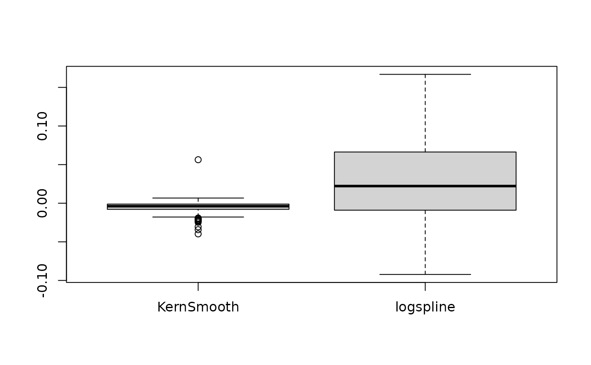

Compute a Bayesian equivalent of the p-value, related to the odds that a parameter (described by its posterior distribution) has against the null hypothesis (h0) using Mills' (2014, 2017) Objective Bayesian Hypothesis Testing framework. It corresponds to the density value at the null (e.g., 0) divided by the density at the Maximum A Posteriori (MAP).
Usage
p_map(x, ...)
p_pointnull(x, ...)
# S3 method for numeric
p_map(x, null = 0, precision = 2^10, method = "kernel", ...)
# S3 method for get_predicted
p_map(
x,
null = 0,
precision = 2^10,
method = "kernel",
use_iterations = FALSE,
verbose = TRUE,
...
)
# S3 method for stanreg
p_map(
x,
null = 0,
precision = 2^10,
method = "kernel",
effects = c("fixed", "random", "all"),
component = c("location", "all", "conditional", "smooth_terms", "sigma",
"distributional", "auxiliary"),
parameters = NULL,
...
)
# S3 method for brmsfit
p_map(
x,
null = 0,
precision = 2^10,
method = "kernel",
effects = c("fixed", "random", "all"),
component = c("conditional", "zi", "zero_inflated", "all"),
parameters = NULL,
...
)Arguments
- x
Vector representing a posterior distribution, or a data frame of such vectors. Can also be a Bayesian model. bayestestR supports a wide range of models (see, for example,
methods("hdi")) and not all of those are documented in the 'Usage' section, because methods for other classes mostly resemble the arguments of the.numericor.data.framemethods.- ...
Currently not used.
- null
The value considered as a "null" effect. Traditionally 0, but could also be 1 in the case of ratios of change (OR, IRR, ...).
- precision
Number of points of density data. See the
nparameter indensity.- method
Density estimation method. Can be
"kernel"(default),"logspline"or"KernSmooth".- use_iterations
Logical, if
TRUEandxis aget_predictedobject, (returned byinsight::get_predicted()), the function is applied to the iterations instead of the predictions. This only applies to models that return iterations for predicted values (e.g.,brmsfitmodels).- verbose
Toggle off warnings.
- effects
Should results for fixed effects, random effects or both be returned? Only applies to mixed models. May be abbreviated.
- component
Should results for all parameters, parameters for the conditional model or the zero-inflated part of the model be returned? May be abbreviated. Only applies to brms-models.
- parameters
Regular expression pattern that describes the parameters that should be returned. Meta-parameters (like
lp__orprior_) are filtered by default, so only parameters that typically appear in thesummary()are returned. Useparametersto select specific parameters for the output.
Details
Note that this method is sensitive to the density estimation method
(see the section in the examples below).
Strengths and Limitations
Strengths: Straightforward computation. Objective property of the posterior distribution.
Limitations: Limited information favoring the null hypothesis. Relates on density approximation. Indirect relationship between mathematical definition and interpretation. Only suitable for weak / very diffused priors.
References
Makowski D, Ben-Shachar MS, Chen SHA, Lüdecke D (2019) Indices of Effect Existence and Significance in the Bayesian Framework. Frontiers in Psychology 2019;10:2767. doi:10.3389/fpsyg.2019.02767
Mills, J. A. (2018). Objective Bayesian Precise Hypothesis Testing. University of Cincinnati.
Examples
library(bayestestR)
p_map(rnorm(1000, 0, 1))
#> MAP-based p-value
#>
#> Parameter | p (MAP)
#> -------------------
#> Posterior | 0.971
p_map(rnorm(1000, 10, 1))
#> MAP-based p-value
#>
#> Parameter | p (MAP)
#> -------------------
#> Posterior | < .001
# \donttest{
model <- suppressWarnings(
rstanarm::stan_glm(mpg ~ wt + gear, data = mtcars, chains = 2, iter = 200, refresh = 0)
)
p_map(model)
#> MAP-based p-value
#>
#> Parameter | p (MAP)
#> ---------------------
#> (Intercept) | < .001
#> wt | < .001
#> gear | 0.832
p_map(suppressWarnings(
emmeans::emtrends(model, ~1, "wt", data = mtcars)
))
#> MAP-based p-value
#>
#> Parameter | p (MAP)
#> -------------------
#> overall | < .001
model <- brms::brm(mpg ~ wt + cyl, data = mtcars)
#> Compiling Stan program...
#> Start sampling
#>
#> SAMPLING FOR MODEL 'anon_model' NOW (CHAIN 1).
#> Chain 1:
#> Chain 1: Gradient evaluation took 8e-06 seconds
#> Chain 1: 1000 transitions using 10 leapfrog steps per transition would take 0.08 seconds.
#> Chain 1: Adjust your expectations accordingly!
#> Chain 1:
#> Chain 1:
#> Chain 1: Iteration: 1 / 2000 [ 0%] (Warmup)
#> Chain 1: Iteration: 200 / 2000 [ 10%] (Warmup)
#> Chain 1: Iteration: 400 / 2000 [ 20%] (Warmup)
#> Chain 1: Iteration: 600 / 2000 [ 30%] (Warmup)
#> Chain 1: Iteration: 800 / 2000 [ 40%] (Warmup)
#> Chain 1: Iteration: 1000 / 2000 [ 50%] (Warmup)
#> Chain 1: Iteration: 1001 / 2000 [ 50%] (Sampling)
#> Chain 1: Iteration: 1200 / 2000 [ 60%] (Sampling)
#> Chain 1: Iteration: 1400 / 2000 [ 70%] (Sampling)
#> Chain 1: Iteration: 1600 / 2000 [ 80%] (Sampling)
#> Chain 1: Iteration: 1800 / 2000 [ 90%] (Sampling)
#> Chain 1: Iteration: 2000 / 2000 [100%] (Sampling)
#> Chain 1:
#> Chain 1: Elapsed Time: 0.022 seconds (Warm-up)
#> Chain 1: 0.022 seconds (Sampling)
#> Chain 1: 0.044 seconds (Total)
#> Chain 1:
#>
#> SAMPLING FOR MODEL 'anon_model' NOW (CHAIN 2).
#> Chain 2:
#> Chain 2: Gradient evaluation took 4e-06 seconds
#> Chain 2: 1000 transitions using 10 leapfrog steps per transition would take 0.04 seconds.
#> Chain 2: Adjust your expectations accordingly!
#> Chain 2:
#> Chain 2:
#> Chain 2: Iteration: 1 / 2000 [ 0%] (Warmup)
#> Chain 2: Iteration: 200 / 2000 [ 10%] (Warmup)
#> Chain 2: Iteration: 400 / 2000 [ 20%] (Warmup)
#> Chain 2: Iteration: 600 / 2000 [ 30%] (Warmup)
#> Chain 2: Iteration: 800 / 2000 [ 40%] (Warmup)
#> Chain 2: Iteration: 1000 / 2000 [ 50%] (Warmup)
#> Chain 2: Iteration: 1001 / 2000 [ 50%] (Sampling)
#> Chain 2: Iteration: 1200 / 2000 [ 60%] (Sampling)
#> Chain 2: Iteration: 1400 / 2000 [ 70%] (Sampling)
#> Chain 2: Iteration: 1600 / 2000 [ 80%] (Sampling)
#> Chain 2: Iteration: 1800 / 2000 [ 90%] (Sampling)
#> Chain 2: Iteration: 2000 / 2000 [100%] (Sampling)
#> Chain 2:
#> Chain 2: Elapsed Time: 0.022 seconds (Warm-up)
#> Chain 2: 0.018 seconds (Sampling)
#> Chain 2: 0.04 seconds (Total)
#> Chain 2:
#>
#> SAMPLING FOR MODEL 'anon_model' NOW (CHAIN 3).
#> Chain 3:
#> Chain 3: Gradient evaluation took 4e-06 seconds
#> Chain 3: 1000 transitions using 10 leapfrog steps per transition would take 0.04 seconds.
#> Chain 3: Adjust your expectations accordingly!
#> Chain 3:
#> Chain 3:
#> Chain 3: Iteration: 1 / 2000 [ 0%] (Warmup)
#> Chain 3: Iteration: 200 / 2000 [ 10%] (Warmup)
#> Chain 3: Iteration: 400 / 2000 [ 20%] (Warmup)
#> Chain 3: Iteration: 600 / 2000 [ 30%] (Warmup)
#> Chain 3: Iteration: 800 / 2000 [ 40%] (Warmup)
#> Chain 3: Iteration: 1000 / 2000 [ 50%] (Warmup)
#> Chain 3: Iteration: 1001 / 2000 [ 50%] (Sampling)
#> Chain 3: Iteration: 1200 / 2000 [ 60%] (Sampling)
#> Chain 3: Iteration: 1400 / 2000 [ 70%] (Sampling)
#> Chain 3: Iteration: 1600 / 2000 [ 80%] (Sampling)
#> Chain 3: Iteration: 1800 / 2000 [ 90%] (Sampling)
#> Chain 3: Iteration: 2000 / 2000 [100%] (Sampling)
#> Chain 3:
#> Chain 3: Elapsed Time: 0.02 seconds (Warm-up)
#> Chain 3: 0.018 seconds (Sampling)
#> Chain 3: 0.038 seconds (Total)
#> Chain 3:
#>
#> SAMPLING FOR MODEL 'anon_model' NOW (CHAIN 4).
#> Chain 4:
#> Chain 4: Gradient evaluation took 4e-06 seconds
#> Chain 4: 1000 transitions using 10 leapfrog steps per transition would take 0.04 seconds.
#> Chain 4: Adjust your expectations accordingly!
#> Chain 4:
#> Chain 4:
#> Chain 4: Iteration: 1 / 2000 [ 0%] (Warmup)
#> Chain 4: Iteration: 200 / 2000 [ 10%] (Warmup)
#> Chain 4: Iteration: 400 / 2000 [ 20%] (Warmup)
#> Chain 4: Iteration: 600 / 2000 [ 30%] (Warmup)
#> Chain 4: Iteration: 800 / 2000 [ 40%] (Warmup)
#> Chain 4: Iteration: 1000 / 2000 [ 50%] (Warmup)
#> Chain 4: Iteration: 1001 / 2000 [ 50%] (Sampling)
#> Chain 4: Iteration: 1200 / 2000 [ 60%] (Sampling)
#> Chain 4: Iteration: 1400 / 2000 [ 70%] (Sampling)
#> Chain 4: Iteration: 1600 / 2000 [ 80%] (Sampling)
#> Chain 4: Iteration: 1800 / 2000 [ 90%] (Sampling)
#> Chain 4: Iteration: 2000 / 2000 [100%] (Sampling)
#> Chain 4:
#> Chain 4: Elapsed Time: 0.021 seconds (Warm-up)
#> Chain 4: 0.018 seconds (Sampling)
#> Chain 4: 0.039 seconds (Total)
#> Chain 4:
p_map(model)
#> MAP-based p-value
#>
#> Parameter | p (MAP)
#> ---------------------
#> (Intercept) | < .001
#> wt | < .001
#> cyl | 0.003
bf <- BayesFactor::ttestBF(x = rnorm(100, 1, 1))
p_map(bf)
#> MAP-based p-value
#>
#> Parameter | p (MAP)
#> --------------------
#> Difference | < .001
# ---------------------------------------
# Robustness to density estimation method
set.seed(333)
data <- data.frame()
for (iteration in 1:250) {
x <- rnorm(1000, 1, 1)
result <- data.frame(
Kernel = as.numeric(p_map(x, method = "kernel")),
KernSmooth = as.numeric(p_map(x, method = "KernSmooth")),
logspline = as.numeric(p_map(x, method = "logspline"))
)
data <- rbind(data, result)
}
data$KernSmooth <- data$Kernel - data$KernSmooth
data$logspline <- data$Kernel - data$logspline
summary(data$KernSmooth)
#> Min. 1st Qu. Median Mean 3rd Qu. Max.
#> -0.039649 -0.007867 -0.003854 -0.005315 -0.001114 0.056255
summary(data$logspline)
#> Min. 1st Qu. Median Mean 3rd Qu. Max.
#> -0.092188 -0.008992 0.022235 0.026989 0.066329 0.166891
boxplot(data[c("KernSmooth", "logspline")])

# }